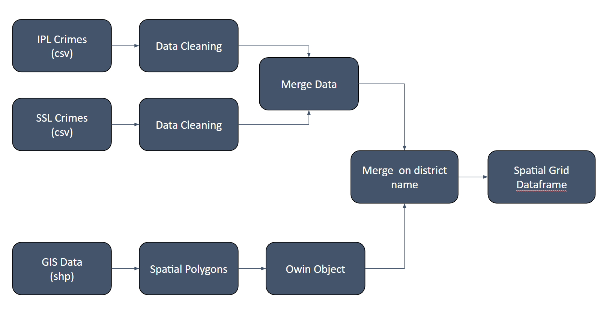
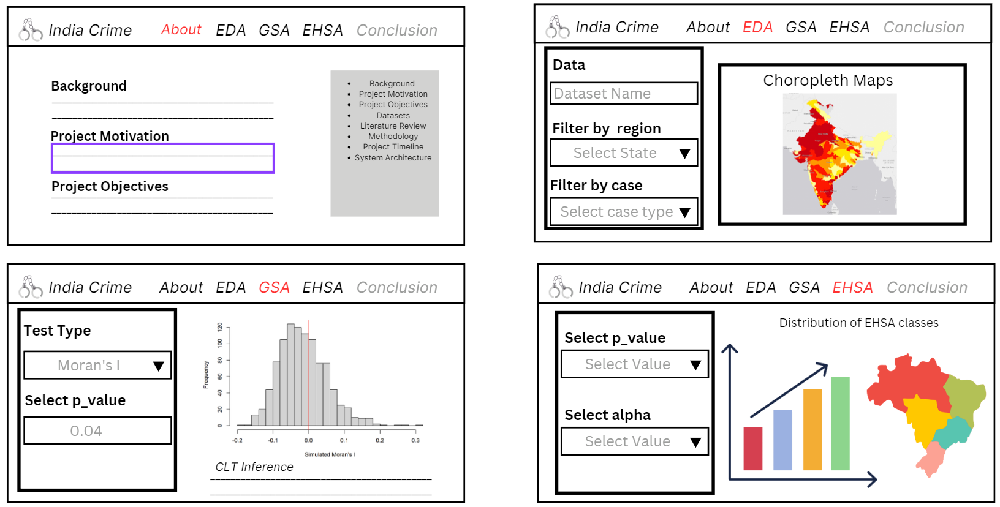

Project Proposal
Background
India has a high rate of crime. Crime rates in India can vary depending on the region, with certain areas experiencing higher rates of crime than others. For example, tourist destinations such as Delhi, Goa, and Mumbai are known to have higher rates of petty crime, such as pick pocketing and theft, especially in crowded areas like markets and train stations. However, violent crime against tourists is rare in India.
Project Motivation
India is known for its rich cultural and historical heritage, various kinds of ecology, places of natural beauty, heart touching ancient and much more are spread across the country. There are definitely enough attractive destinations for overseas tourists. However, with the high crime rate in India, it will discouraged tourist from visiting India and appreciate its unique culture.
Therefore, we hope that creating this application can bring benefits to multiple stakeholders: by helping policymakers understand the nature and extent of crime rate in the different districts of India so that they could work on investigation and enforce stricter law in the identified high crime districts. Additionally, it aims to also help to raise public awareness about crime and safety issues, tourists can make more informed choices to where they want to go after knowing the crime rates in different districts in India.
Project Objectives
Our research would focus on conducting a geospatial analysis of crime patterns in India by identifying the crime rates in the different districts of India. Additionally, we will also be analysing the types of crimes and offenders in each district, with the aim of aiding crime prevention and law enforcement efforts.
Datasets
Geospatial Data
- GIS Data: This contains the shp file of the boundaries of India.
Aspatial Data
- Districtwise IPC Crimes 2021: The dataset consists of crimes punishable under the Indian Penal Code (IPC) on a district level including the 28 states and 8 union territories. There are 142 such crimes that can be further combined.
- Districtwise SLL Crimes 2021: Similarly, this dataset consists of crimes punishable under Special and Local Laws (SLL) on a district level including the 28 states and union territories. There are 92 such crimes that can be further combined.
Data Preparation

Literature Review
Crime Mapping and Hot Spot Analysis using Geospacial Techniques: A Case of Ajmer City
By Monika Kannan, Kasina V. Rao, Mayur Raj and P. Alok Verma
Objective
Identify crime prone zones through crime mapping with probability of occurrence based on the past incidence of various crime locations
Methodology
Euclidean distances of Crimes from Police station and Highways
Cluster Analysis
Hotspot Analysis
Interpolation (co-Kriging) : To predict the susceptible crime regions based on the correlation with other non-spatial attributes
Learning Points
The use of co-Kriging total crime with socioeconomic factors as an estimation method
The use of weighted overlay analysis of selected variables to predict crime prone areas
Areas of Improvement
Local Gi* statistics could have been used to better filter the data based on crime levels
Euclidean distance mapping was unnecessary. Alternates like scatter plots with regression lines could have been used to visualise the distance better.
The correlation coefficients for co-Krining were really high (0.9+) and could have caused high collinearity.
Analysis of Criminal Spatial Events in GIS for predicting hotspots
By Abbas F. Mohammed and Wadhah R. Baiee
Objective
To recognize the hotspots for crime data like Shooting, Homicide and Assault by threat in Baltimore, Maryland
Methodology
Getis-Ord Gi* statistics
Hot Spot Analysis
Learning Points
- The use of a small dataset and region was beneficial to get a granular understanding of the crimes rates over time
Areas of Improvement
There could have been a final aggregation of the crimes as a final visualisation.
Additional data on the strength of each police district could have improved the predictive value of crime rates
The Mann-Kendall Test could have been incorporated for each police district to better gauge its crime rate over the given time period
GIS Technologies in Crime Analysis and Crime Mapping
By Vijaya Kumar and C. Chandreasekar
Objective
Identify relationship between financial characteristics and crime rate in Chennai and use it to explore other incident sites.
Methodology
GIS Event Analysis
Temporal and Spatial Distribution of Incidents
Density Analysis by Kernel Estimation
Hot Spot Analysis
Learning Points
The linking of geographic factors (such as land use) to type of crime was an interesting way to generate crime predictions.
Hotspot Analysis can be done by Spatial and Temporal Analysis of Crime (STAC) program
Areas of Improvement
- The hotspot analysis could have been segregated by incident type to generate better insights from the data.
Methodology
For our project, we will be using a collection of geospatial statistical for measuring global and local spatial analysis of crime in the districts of India. Spatial autocorrelation refers to the degree to which neighboring locations are similar or dissimilar in terms of a particular attribute (crime rate in our case).
These spatial statistics are well suited for:
Detecting clusters or outliers
Identifying hot spot or cold spot areas
Assessing the assumptions of stationary
Identifying distances beyond which no discernible association obtains
The following is our methodoly for analysing the crime rates in India at district level –
Data Collection and Preprocessing: We will collect and preprocess crime data for India, including the location data in the form of latitude and longitude coordinates, along with other relevant attributes such as crime type, time and date of occurrence, etc.
Spatial Data Analysis: We will conduct exploratory spatial data analysis (ESDA) to examine the spatial distribution of crime in India using choropleth maps, histograms, and spatial autocorrelation plots.
Global Spatial Autocorrelation: We will calculate Global Spatial Autocorrelation measures such as Moran’s I or Geary’s C to identify whether the spatial pattern of crime incidents is clustered, dispersed or random.
Local Spatial Autocorrelation: We will calculate Local Spatial Autocorrelation measures such as Local Moran’s I, Geary’s C and Getis-Ord Gi* to identify hotspots (high-high) and coldspots (low-low) of crime incidents across India.
Spatial Visualization: We will then visualize the results of Global and Local Spatial Autocorrelation measures using maps, heatmaps, or other visualization techniques. This can help to identify spatial patterns and clusters of crime incidents and to highlight areas that may require further investigation or intervention.
Interpretation and Conclusion: Lastly, we interpret the results of the analysis and draw conclusions about the spatial patterns and drivers of crime incidents in India.
Project Timeline

Application System Architecture

Storyboard
